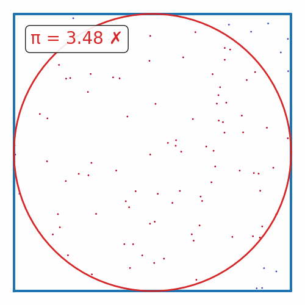
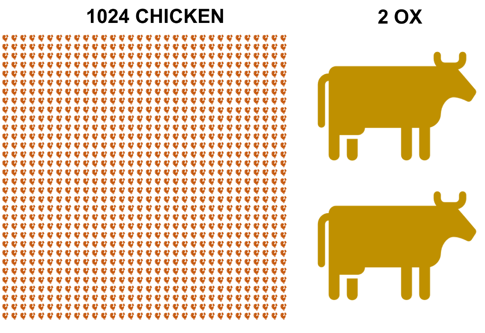

Parallelization Techniques#
The goals of this tutorial:
Basic concepts of parallelization
vectorization
threads/processes/GIL
MPI
GPU/TPUs
High-level python parallelization techniques
We’ll go over some details (~10 min + QA) and then break into groups of 2-3 to work on some exercises.
The exercises:
π-estimation |
 |
N-Body sim |
|
Fractals |
Overview#
There are several ways to increase the number of computations per second. Some include:
Increasing the number of computations per clock cycle:
by adding more transistors to a single CPU
by increasing the clock speed of a single CPU
Increasing the number of ‘workers’ crunching computations:
by adding more ‘cores’ to a single machine
by adding more machines to a network
by using specialized hardware to do the math (e.g., GPUs, TPUs, FPGAs, etc.)
The first approach is called serial computing, and the second approach is called parallel computing.
Unfortunately, the first approach has hit a wall. See the figures from the Standford VLSI Group’s CPU DB.
Features on a chip |
Clock speed |
|---|---|
|
|


We’re unlikely to make drastic improvements in either of these in the near future, due to inherent physical limitations on the construction of chips and circuit boards. Parallel computing is a way forward.
The pioneer of multiprocessing, and “Father of supercomputing”, Seymour Cray, once said:
If you were plowing a field, which would you rather use? Two strong oxen or 1024 chickens?”
Seymour Cray,

Cray considered this an obvious question, as to him, it is absurd to plough a field with chickens. He thought it would be absurd to use several processors to crunch computations in parallel, in place of one fast processor to crunch computations sequentially. By the early 2000s, views began to shift…
Flynn’s taxonomy and “types” of parallelization#
The remainder of this tutorial#
We will focus on the SIMD (Single Instruction Multiple Data) type of parallelization.
Very relavent video of several thousand chickens fighting a few T-rexes
import numpy as np
from time import process_time
import matplotlib.pyplot as plt
from tqdm.auto import tqdm
import warnings
def fn(x):
return x + x * x + x * x * x
def runtime_loops(x):
_ = np.empty_like(x)
t0 = process_time()
for i in range(len(x)):
_[i] = fn(x[i])
return process_time() - t0
def runtime_np_vectorized(x):
t0 = process_time()
_ = fn(x)
return process_time() - t0
import multiprocessing as mp
try:
import cupy as cp
# Check the current device
print(f"CuPy platform: {cp.cuda.Device()}")
CUPY_INSTALLED = True
except ImportError:
CUPY_INSTALLED = False
warnings.warn("Cupy not installed")
try:
import jax.numpy as jnp
from jax import jit
from jax.lib import xla_bridge
print(f"JAX platform: {xla_bridge.get_backend().platform}")
JAX_INSTALLED = True
except ImportError:
JAX_INSTALLED = False
warnings.warn("Jax not installed")
def runtime_multiprocessing(x):
pool = mp.Pool(mp.cpu_count())
t0 = process_time()
_ = pool.map(fn, x)
return process_time() - t0
def runtime_multithreading(x):
pool = mp.pool.ThreadPool(mp.cpu_count())
t0 = process_time()
_ = pool.map(fn, x)
return process_time() - t0
if JAX_INSTALLED:
jax_fn = jit(fn)
def runtime_jax(x):
if not JAX_INSTALLED:
return np.nan
x = jnp.array(x)
t0 = process_time()
_ = jax_fn(x).block_until_ready()
return process_time() - t0
def runtime_cupy(x):
if not CUPY_INSTALLED:
return np.nan
x = cp.array(x)
t0 = process_time()
_ = fn(x).get()
return process_time() - t0
RUNTIME_FUNCS = dict(
loops=runtime_loops,
np_vectorized=runtime_np_vectorized,
multiprocessing=runtime_multiprocessing,
multithreading=runtime_multithreading,
jax=runtime_jax,
cupy=runtime_cupy,
)
def collect_runtime_data(n_vals, n_trials=5):
runtimes = {k: [] for k in RUNTIME_FUNCS.keys()}
for i, n in tqdm(enumerate(n_vals), total=len(n_vals)):
x = np.random.randn(n, n).astype(dtype='float32')
for k, fn in RUNTIME_FUNCS.items():
trials = np.empty(n_trials)
for j in range(n_trials):
trials[j] = fn(x)
if n_trials > 1:
trials = trials[trials.argsort()[:-1]]
runtimes[k].append(np.quantile(trials, [0.05, 0.5, 0.95]))
for k in RUNTIME_FUNCS.keys():
runtimes[k] = np.array(runtimes[k])
return runtimes
def plot_runtimes(n_vals, runtimes):
fig, ax = plt.subplots(figsize=(10, 6))
for i, (k, v) in enumerate(runtimes.items()):
ax.plot(n_vals, v[:,1], label=k, color=f'C{i}')
ax.fill_between(n_vals, v[:,0], v[:,2], alpha=0.2, color=f'C{i}')
ax.set_xlabel('Array Size')
ax.set_ylabel('Runtime (s)')
ax.set_yscale('log')
ax.set_xscale('log')
ax.set_xlim(min(n_vals),max(n_vals))
ax.legend(fontsize=15, frameon=False)
return fig
n_vals = np.geomspace(1e2, 1e3, 10).astype(int)
runtimes = collect_runtime_data(n_vals)
plot_runtimes(n_vals, runtimes)
DEMO 1: using vectorization#
n = 10000
# Generate n random numbers between 0 - 1
theta = np.random.rand(n)
#Generate n random integers between 0 - 100
x = np.random.randint(0, 100, n)
# Unvectorized
def unvectorized(n, theta, x):
prediction = 0.0
for j in range(n):
prediction = prediction + theta[j] * x[j]
return prediction
# Vectorized
def vectorized(theta, x):
prediction = 0.0
prediction = np.dot(theta.transpose(), x)
return prediction
#Comparing Performance
% timeit unvectorized(n, theta, x)
% timeit vectorized(theta, x)